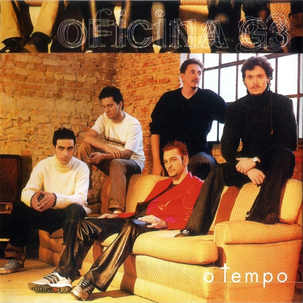

O Tempo
2000 • Pop rock hard rock rock cristão
O Álbum
O Tempo é o quarto álbum de estúdio da banda brasileira de rock Oficina G3, lançado em outubro de 2000. É o primeiro disco da banda pela gravadora MK Music. A obra representou uma mudança de fase na carreira da banda, já que o estilo pop rock foi definitivamente adotado naquela época.
Apesar de este estilo estar presente nos dois álbuns passados, aqueles eram exceções por serem álbuns acústicos, não diferindo muito da maioria dos trabalhos acústicos seculares da época. O álbum mantém certas características do Oficina G3, como solos na maioria das faixas, e as participações já conhecidas de Juninho Afram nos vocais, mas o fato de o hard rock ter sido parcialmente abandonado no álbum desagradou à maioria dos antigos fãs da banda. É o último álbum com Walter Lopes na bateria desde a primeira formação, sendo que desde então Juninho Afram é o único membro da formação original.
Se, com essa mudança desagradou os antigos admiradores que optavam pelo hard rock, o Oficina ganhou vários outros fãs. O disco conquistou avaliações favoráveis da crítica e foi eleito o 25º melhor disco da década de 2000, de acordo com lista publicada pelo Super Gospel.
Tracklist
- Introdução
- O Caminho
- Atitude
- Ele Vive
- O Tempo
- Preciso Voltar
- Perfeito Amor
- Necessário
- Hey Você!
- Brasil
- Sempre Mais
- Ingratidão
- Tua Voz